Pivot-Tabelle
Pivot-Table
Zusammenfassung
Die Pivot-Tabelle bietet eine schnelle Möglichkeit, Ihre Daten zusammenzufassen und zu analysieren, zu vergleichen und Beziehungen in Ihren Daten zu entdecken. Dieses Hilfsmittel kann sortieren, zählen, addieren oder Minimum, Maximum oder den Mittelwert der im Arbeitsblatt gespeicherten Daten berechnen.
Origin-Version mind. erforderlich: Origin 2015 SR0
Was Sie lernen werden
- Daten mit Hilfe einer Pivot-Tabelle zusammenfassen
- Ausgaben nach den Gesamtsummen von Zeilen oder Spalte in der Pivot-Tabelle sortieren
- Kleine Werte in Spalten oder Zeilen kombinieren und zusätzliche Werte benutzerdefiniert anpassen
Daten aus einer Datenbank importieren
- Vor Erstellen einer Pivot-Tabelle können Sie Daten aus der Datenbank importieren. Angenommen, Sie haben bereits eine Datenbank mit dem Namen AdventureWorks2008R2 auf einem Server - myServer - einem laufenden SQL-Server mit dem Benutzernamen "accounting" und dem Passwort "mydatabase".
- Um eine Verbindung zu der Datenbank herzustellen, verwenden Sie die Zeichenkette:
Provider=SQLOLEDB.1;Password=mydatabase;Persist Security Info=True; User ID=accounting;Initial Catalog=AdventureWorks2008R2;Data Source=myServer
- Aktivieren Sie ein leeres Arbeitsblatt und öffnen Sie den SQL-Editor, indem Sie auf die Schaltfläche SQL-Editor öffnen auf der Symbolleiste Datenbankzugriff klicken.
- 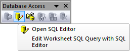
- Wählen Sie das Menüelement Verbindungszeichenkette bearbeiten im Menü Datei des SQL-Editors und geben Sie in dem geöffneten Dialog die Verbindungszeichenkette (siehe Schritt 1 oben) in das Textfeld ein. Sie können auf die Schaltfläche Test klicken, um zu prüfen, ob der Verbindungsstatus in Ordnung ist. Wenn er in Ordnung ist, klicken Sie auf die Schaltfläche OK, um die Verbindung zur Datenbank herzustellen.
- 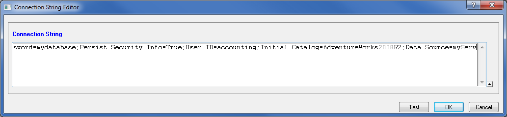
- Geben Sie im rechten Textfeld die folgenden SQL-Aussagen ein.
SELECT DatePart(yyyy, SOH.OrderDate) AS YEAR, CR.Name As CustomerCountry, Pr.Name As ProductName, Pr.Color As ProductColor, PC.Name As ProductCategory, PS.Name As ProductSubcategory, SOH.OrderDate As OrderDate, SOD.OrderQty As OrderAmount, SOD.LineTotal As TotalCost FROM Person.CountryRegion AS CR INNER JOIN Person.StateProvince AS SP ON SP.CountryRegionCode = CR.CountryRegionCode INNER JOIN Person.Address AS A ON A.StateProvinceID = SP.StateProvinceID INNER JOIN Person.BusinessEntityAddress AS BEA ON BEA.AddressID = A.AddressID INNER JOIN Person.Person AS P ON P.BusinessEntityID = BEA.BusinessEntityID INNER JOIN Sales.PersonCreditCard AS PCC ON PCC.BusinessEntityID = P.BusinessEntityID INNER JOIN Sales.SalesOrderHeader AS SOH ON SOH.CreditCardID = PCC.CreditCardID INNER JOIN Sales.SalesOrderDetail AS SOD ON SOD.SalesOrderID = SOH.SalesOrderID INNER JOIN Production.Product AS Pr ON Pr.ProductID = SOD.ProductID INNER JOIN Production.ProductSubcategory AS PS ON PS.ProductSubcategoryID = Pr.ProductSubcategoryID INNER JOIN Production.ProductCategory AS PC ON PC.ProductCategoryID = PS.ProductCategoryID --WHERE SOH.OrderDate BETWEEN '1/1/2005' AND '12/31/2008'
- Wählen Sie im Menü Datei: Im aktiven Arbeitsblatt speichern, um diese Einstellungen in dem Arbeitsblatt zu speichern. Wählen Sie im Menü Anfrage: Import, um die Daten in das Arbeitsblatt zu importieren. Schließen Sie dann den SQL-Editor. Sie können die importierten Daten im Bild unten sehen.
- 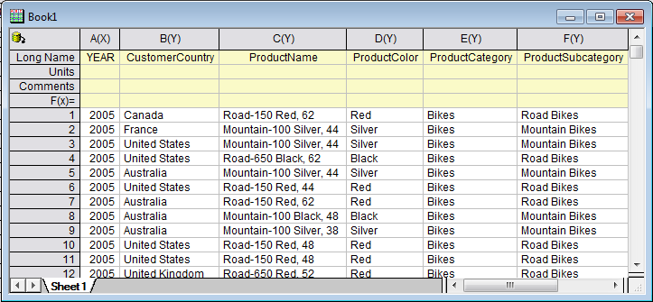
- Klicken Sie auf Schließen, um den Dialog zu schließen.
Eine Pivot-Tabelle erstellen
Der importierte Datensatz ist eine Zusammenfassung der Gesamtkosten der drei Produktkategorien (Bikes, Accessories, Clothing) in sechs verschiedenen Ländern pro Jahr. Angenommen, Sie möchten eine Pivot-Tabelle erstellen, um die jährliche Summe der Gesamtkosten der verschiedenen Produktkategorien zu sehen. Befolgen Sie die Schritte, um die Pivot-Tabelle zu erstellen.
- Aktivieren Sie Sheet1 und wählen Sie Restrukturieren: Pivot-Tabelle im Hauptmenü, um den Dialog zu öffnen. Legen Sie die folgenden Einstellungen im Dialog fest:
- Klicken Sie für Zeilenquelle der Pivot-Tabelle auf die dreieckige Schaltfläche
 , um die Spalte A hinzuzufügen.
, um die Spalte A hinzuzufügen.
- Klicken Sie für Spaltenquelle der Pivot-Tabelle auf die dreieckige Schaltfläche , um die Spalte E hinzuzufügen.
- Wählen Sie Summe in der Auswahlliste Zusammenfassen mit. Wählen Sie Spalte I für Datenquelle der Pivot-Tabelle.
- Erweitern Sie den Zweig Optionen, aktivieren Sie die Kontrollkästchen Gesamtsumme für Zeilen und Gesamtsumme für Spalten und wählen Sie Zeilenbeschriftungen aufsteigend in der Auswahlliste Ausgabezeilen sortieren.
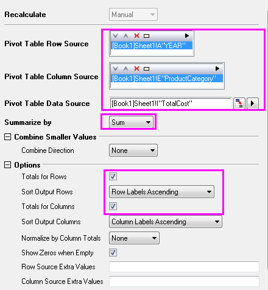
- Klicken Sie auf die Schaltfläche OK, um die Pivot-Tabelle zu erstellen. Die Tabelle sollte folgendermaßen aussehen:
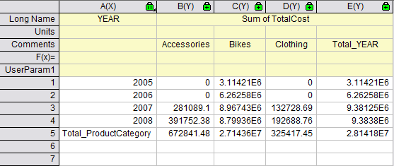
Kleine Werte kombinieren
In diesem Abschnitt erfahren Sie, wie Sie die Kategorien, deren Prozentsatz des zusammengefassten Werts (Anzahl/Summe/Mittelwert/Min./Max.) bedingt, dass die Gesamtsumme einen Schwellenprozentwert übersteigt, darstellen, und kombinieren Kategorien von kleinen Werten in einer Standardkategorie Andere (Others).
- Basierend auf dem obenstehenden Beispiel klicken Sie auf das Schlosssymbol im Arbeitsblatt Pivot1 und wählen Parameter ändern, um den Dialog erneut zu öffnen.
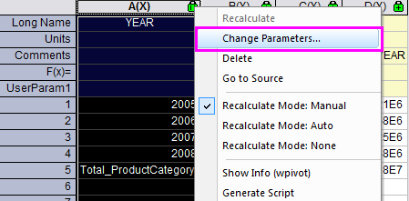
- Legen Sie die folgenden Einstellungen im Dialog fest:
- Wählen Sie nach Erweitern des Zweigs Kleinere Werte kombinieren die Option Spalte in der Auswahlliste Kombinationsrichtung.
- Wählen Sie Nach Prozent der Gesamtsumme in der Auswahlliste Modus.
- Geben Sie 30 im Textfeld Prozent ein und Weitere kleinere Elemente im Textfeld Spaltenbeschriftung.
- Erweitern Sie den Zweig Optionen und deaktivieren Sie die Kontrollkästchen Gesamtsumme für Zeilen und Gesamtsumme für Spalten.
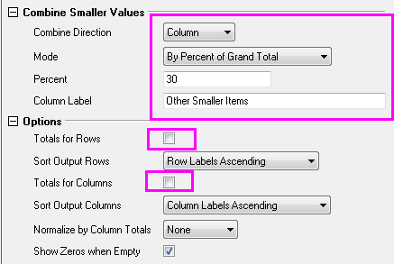
- Klicken Sie auf OK. Die Pivot-Tabelle zeigt die Zusammenfassung der Daten nach Summe. Nur die Kategorie Bikes verfügt über einen Prozentsatz der Gesamtsumme, der den Schwellenprozentwert von 30% überschreitet. Weitere kleinere Kategorien wurden zu der Kategorie Weitere kleinere Elemente (Other Smaller Items) reduziert.
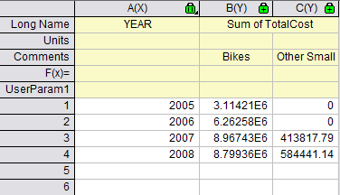
Zusätzliche Quelle für Kategorien
In diesem Abschnitt wird gezeigt, wie Sie die Kategorien, die im Quelldatenblatt fehlen, mit Zusätzliche Werte der Spaltenquelle darstellen. Dies ist nützlich, wenn Sie sichergehen wollen, dass sich alle erforderlichen Kategorien in der resultierenden Pivot-Tabelle befinden, die zum Zeichnen zu einem späteren Zeitpunkt verwendet werden könnte.
Angenommen, Sie möchten die Summe der Gesamtkosten der verschiedenen Produktkategorien vor Year 2007 wissen. Befolgen Sie die Schritte, um die Pivot-Tabelle zu erstellen.
- Um die Jahre vor 2007 zu filtern, verwenden Sie den Datenfilter. Gehen Sie zu Sheet 1 und markieren Sie Spalte Col A. Klicken Sie auf die Schaltfläche im Hauptmenüleiste. Klicken Sie erneut auf das Filtersymbol auf Col A und wählen Sie Kleiner als. Passen Sie den angezeigten Dialog des Filters, wie unten gezeigt, an und klicken Sie dann auf OK, um den Dialog zu schließen.
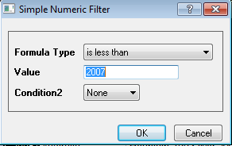
- Klicken Sie auf das Schlosssymbol im Arbeitsblatt Pivot1 und wählen Sie Neu berechnen. Wie in der folgenden Pivot-Tabelle gezeigt, werden hier nur Bikes dargestellt, weil die beiden anderen Produktkategorien keine Aufzeichnungen zu den Kosten aus dem Year 2005 und 2006 haben.
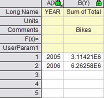
- Gehen Sie zurück zum Arbeitsblatt Pivot1, wählen Sie Spalte col(b) und klicken Sie auf Zeichnen: 2D: Balken: Säulendiagramm, um ein Säulendiagramm (Graph1) zu zeichnen.
- Als Nächstes sollen zwei fehlende Kategorien wieder in die Pivot-Tabelle eingefügt werden. Klicken Sie auf das Schlosssymbol im Arbeitsblatt Pivot1 und wählen Sie Parameter ändern. Passen Sie den Dialog, wie unten gezeigt, an und klicken Sie dann auf OK, um den Dialog zu schließen. Der Pivot-Tabelle würde folgendermaßen aussehen.
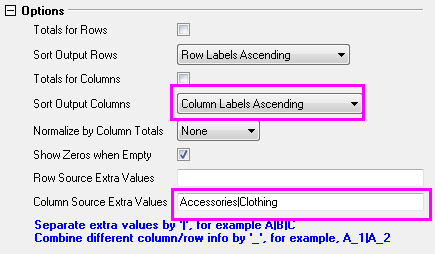
Der Pivot-Tabelle würde folgendermaßen aussehen.
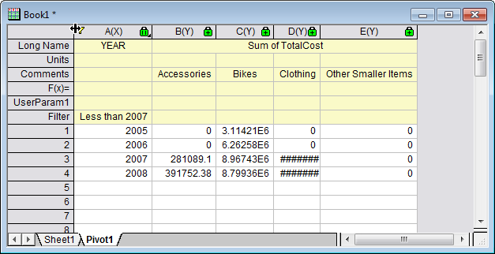
- Kehren Sie zurück zum Arbeitsblatt Pivot1. Klicken Sie erneut auf das Filtersymbol in Spalte Col A und wählen Sie Filter löschen im Popup-Menü, um den Filter zu entfernen. Wählen Sie dann alle Spalten aus, um ein Säulendiagramm (Graph2) zu zeichnen. Das Diagramm zeigt die fehlenden Kategorien.
- Wieder im Arbeitsblatt Pivot1 klicken Sie mit der rechten Maustaste auf den grauen Bereich und wählen Sie Diagramm hinzufügen, um Graph2 zum Arbeitsblatt Pivot1 hinzuzufügen.
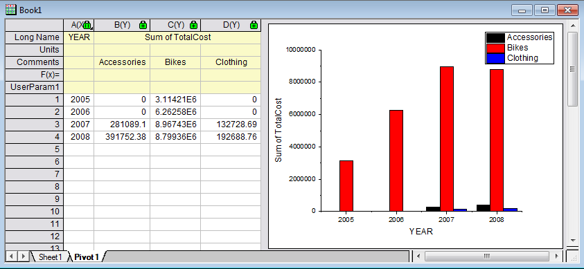
 | Das Filtern des Jahres (year) kann auch in der Datenbank erreicht werden. In diesem Fall können Sie den günstigen Zeitraum durch Neuschreiben dieses Skripts benutzerdefiniert anpassen:
--WHERE SOH.OrderDate BETWEEN '1/1/2005' AND '12/31/2008'
|
Analysevorlage erstellen
In diesem Abschnitt wird gezeigt, wie Sie eine Analysevorlage für Pivot-Tabellen erstellen, Daten aus einer Datenbank neu importieren und die Analysevorlage erneut verwenden, um die Pivot-Tabelle für neue Daten zu erstellen.
- Aktivieren Sie Book1, klicken Sie auf Datei: Arbeitsmappe als Vorlage speichern und speichern Sie sie als SumTotalCost.ogw.
- Öffnen Sie eine neue OPJ-Datei und klicken Sie auf Datei: Öffnen, um SumTotalCost.ogw zu öffnen.
- Um die Datenquelle auf AdventureWorks2008 in der Datenbank zu setzen,
- aktivieren Sie Sheet1 und öffnen Sie den SQL-Editor, indem Sie auf die Schaltfläche SQL-Editor öffnen
 klicken.
klicken.
- Klicken Sie auf Datei: Verbindungszeichenkette bearbeiten und geben Sie dann die folgende Zeichenkette in dem aufgerufenen Dialog ein. Klicken Sie auf Test und dann auf OK, um die Datenbank zu verbinden.
Provider=SQLOLEDB.1;Password=mydatabase;Persist Security Info=True; User ID=accounting;Initial Catalog=AdventureWorks2008;Data Source=myServer
- Wieder im Dialog des Dialogs SQL-Editor schreiben Sie das letzte Skript im rechten Bedienfeld neu mit
--WHERE SOH.OrderDate BETWEEN '1/1/2001' AND '12/31/2004'
- Wählen Sie im Menü Datei: Im aktiven Arbeitsblatt speichern, um diese Einstellungen in dem Arbeitsblatt zu speichern. Wählen Sie im Menü Anfrage: Import, um die Daten in das Arbeitsblatt zu importieren. Schließen Sie dann den SQL-Editor. Sie können die importierten Daten im Bild unten sehen.
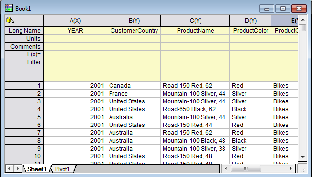
- Um die Pivot-Tabelle zu aktualisieren, gehen Sie zu Blatt Pivot1, klicken Sie auf das gelbe Schloss und wählen Sie Neu berechnen aus. Die Pivot-Tabelle wird entsprechend neuer Daten aktualisiert.
- Um das eingebettete Diagramm zu aktualisieren:
- klicken Sie doppelt auf das eingebettete Diagramm und ein frei bewegliches Diagramm wird aufgerufen.
- Aktivieren Sie das Diagramm und klicken Sie auf die Schaltfläche Neu skalieren, um
 zu aktualisieren. Das frei bewegliche Diagramm wird ebenfalls aktualisiert.
zu aktualisieren. Das frei bewegliche Diagramm wird ebenfalls aktualisiert.
- Klicken Sie auf die Pfeilschaltfläche oben rechts im frei beweglichen Diagramm, um es ins Arbeitsblatt zurück zu bringen. Das Arbeitsblatt würde folgendermaßen aussehen.
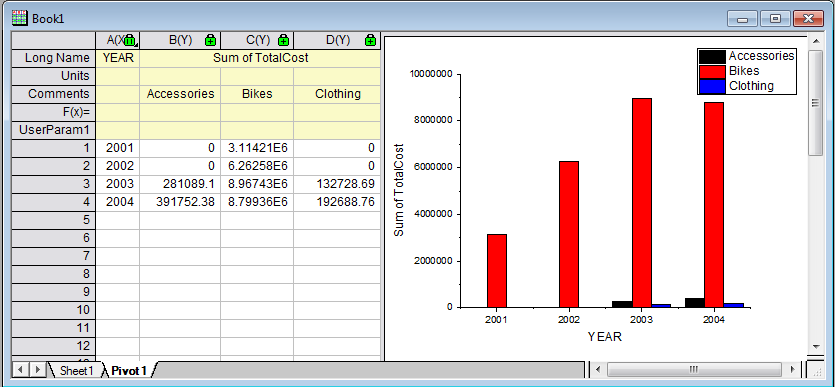